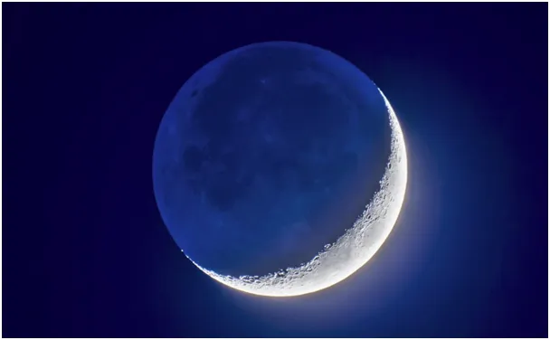
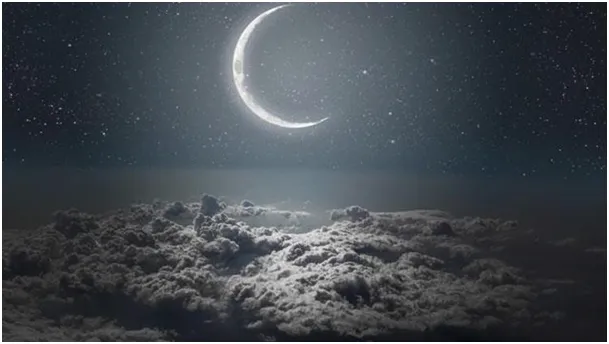
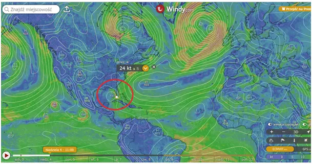
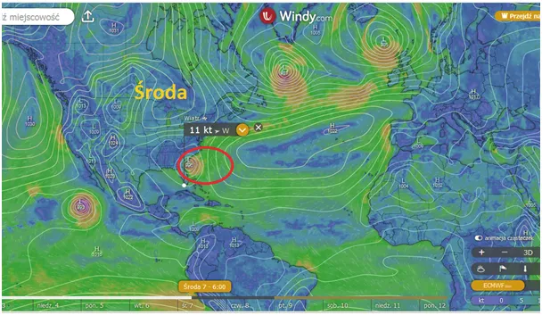
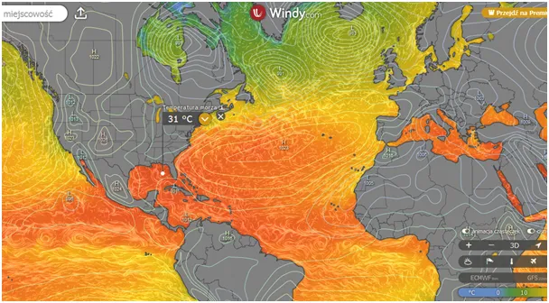

Lepsze jest wrogiem dobrego.
Lepsze jest wrogiem dobrego.
Prognozowane na jutro narodziny huraganu na wschód od Florydy zdementowano. Huragan ma się narodzić na gorących wodach Zatoki Meksykańskiej a potem nad Florydą przenieść się nad ocean. Zdemoluje on tam nie jeden dom, ale też zepsuje amerykańskim turystom wakacje. Jeśli zassie jakieś bajorko, to 20 km dalej może spaść na spokojne miasteczko deszcz aligatorów.

Modele i prognozy są obarczone dużym błędem, nie uwzględniają np. oddziaływań na Ziemię Księżyca, a są one potężne. Gdy Księżyc jest pomiędzy Ziemią a Słońcem grawitacja ich obu podnosi co noc całą równikową Afrykę i Amerykę o 30 cm, a o świcie spokojnie opuszcza całe kontynenty, aby następnej nocy znów je powolutku podnieść i opuścić. Pojutrze (w poniedziałek 5 sierpnia) mamy nów, sprawy nabiorą nowej dynamiki.


Znacznie podatniejsze oceany podnosi na wiele metrów, co ma wpływ na pływy oceaniczne i rozkład ciśnienia. To oddziaływanie w bardzo niestabilnym układzie, jakim jest atmosfera, może przesądzić, gdzie powstanie niż i jaką trajektorią będzie się poruszał. Jesteśmy zdani na potężne siły kosmiczne. Ich skala jest tak ogromna, że jako istoty inteligentne dostosowujemy się do nich tworząc cywilizację. Budujemy domy, by schronić się przed zimnem, zbieramy zapasy, tworzymy społeczności i państwa, w których możemy bezpiecznie handlować, bo w pojedynkę jesteśmy bezbronni.

Gdy uda nam się kiedyś zatrzymać narodziny cyklonu narobimy mnóstwo innych nieszczęść, cyklony są zaworami bezpieczeństwa. Gdy ocean jest za ciepły unoszące się powietrze tworzy wirujący cyklon i nadmiar ciepła wysyła bezpowrotnie w bezkresny Kosmos. Lepsze jest wrogiem dobrego!
Paweł Klimczewski